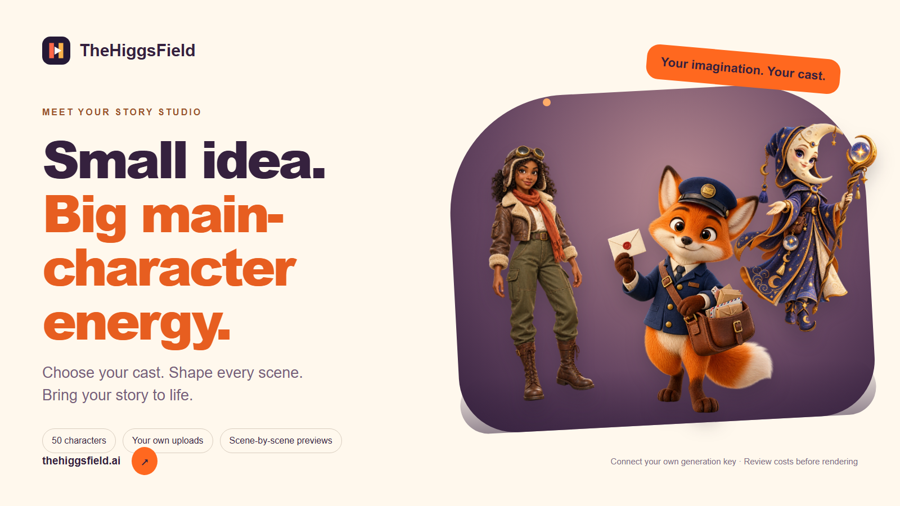

Find your main character.
50 characters, searchable categories and your own image uploads. Keep your cast beside the story as you write.
YOUR CHARACTERS. YOUR STORIES. YOUR KEYS.
A character-to-film studio you can make your own. Choose a cast, shape six scenes, review the cost, and bring your story to life.

FROM A SPARK TO SIX SCENES
50 characters, searchable categories and your own image uploads. Keep your cast beside the story as you write.
Review scene action and narration. Choose a generation option and see the estimate before starting a paid render.
Follow scene progress, preview completed clips and download the assembled one-minute film.
INDEPENDENT BY DESIGN
Self-host the app and connect fal or Higgsfield. Providers bill your account directly. Encrypted key storage, private workspaces and device-aware light and dark themes are included.
BUILD SOMETHING OF YOUR OWN
git clone https://github.com/thehiggsfieldai/OpenHiggsfield.git
cd OpenHiggsfield
cp .env.example .env
# Configure origin, authentication secret and email delivery.
docker compose up --build -dConfigure sign-in and HTTPS before inviting users. AI generation and hosting have costs. Model outputs need review; character and voice continuity are not guaranteed.
Read the setup guide ↗OpenHiggsfield and TheHiggsField are independent projects, not affiliated with, sponsored by, operated by, or endorsed by Higgsfield.ai. Provider names and trademarks belong to their owners.
The hosted site is a preview. Public gallery publishing and private sharing are not yet a complete workflow. Check the repository for current capabilities and setup requirements.